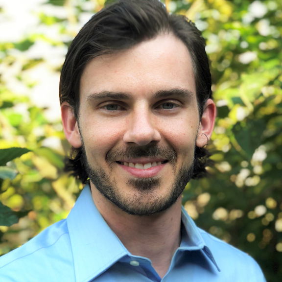
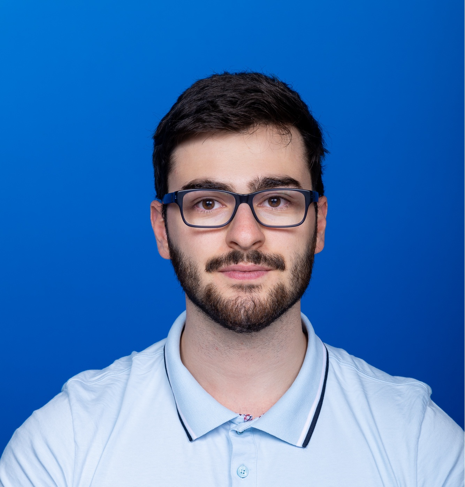

Our Team
Our research will be grounded in interdisciplinary expertise, leveraging AI-augmented computations and experiments to address complex challenges in materials and mechanical sciences.

Zhantao Chen
Principal Investigator
2022 Ph.D. Massachusetts Institute of Technology
2018 S.M. Massachusetts Institute of Technology
2016 B.Eng. Harbin Institute of Technology
2018 S.M. Massachusetts Institute of Technology
2016 B.Eng. Harbin Institute of Technology
Dr. Chen is a tenure-track Assistant Professor in the Walker Department of Mechanical Engineering at The University of Texas at Austin (UT). He is also affiliated with the Texas Materials Institute and the Oden Institute for Computational Engineering & Sciences. Before joining UT, he was a Research Associate at SLAC National Accelerator Laboratory (2022-2025).

Ian Walsh
Master's Student
2015 M.S. Stanford University
2010 B.S. Rice University
2010 B.S. Rice University
Ian is studying for a masters in Artificial Intelligence. His research focuses on a multi-agent coordination framework for orchestrating experimental workflows.

David Katz
Master's Student
2022 B.S. (Honors) Carleton University
David is studying for a Master's in Computer Science. His research focuses on fine-tuning and reinforcement learning of small parameter models for experimental workflows.

Roy Liu
Undergraduate Research Assistant
2024 - Current, B.S. in Computer Science, UT
Roy is interested in Bayesian methods and agentic AI systems for scientific problems. His current research focuses on active learning and surrogate-model parameter inversion for complex neutron scattering measurements.